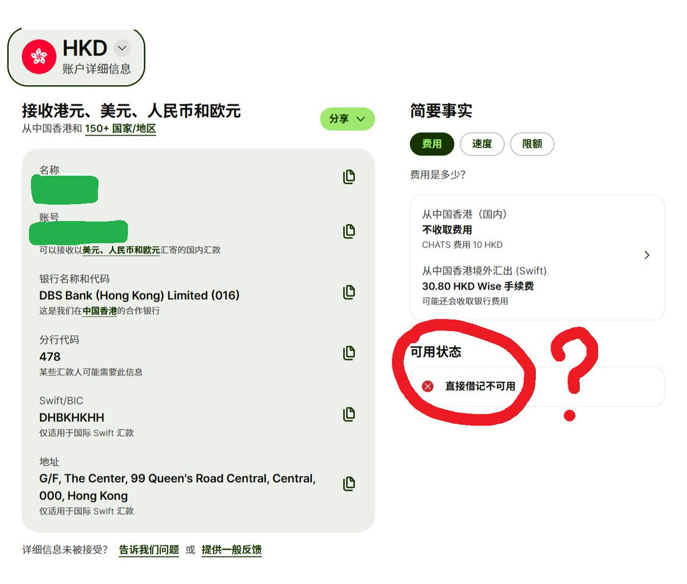

Aoi M
@aoim33
科普：关于直接借记
首先需要清楚这样的一个概念：借记这个金融术语在形式上就是把钱从你的账户里拿走，然后记一笔的意思
在实际操作上，直接借记是允许公共事业单位（水电煤气商）或者收付款提供方（例如stripe本体）在不需要你同意的情况下直接从你的银行账户扣钱，用于支付订阅，账单，退款等

ShyNloc
@shynloc
有没有大佬能看到答疑解惑一下。Wise好像给了我港币的账户了，这个页面是不是就证明已经开通，可用了？可用状态那里直接借记不可用是表达什么意思？不影响正常收转资金吧？ #help #求助 @grok https://t.co/17diciKJ76